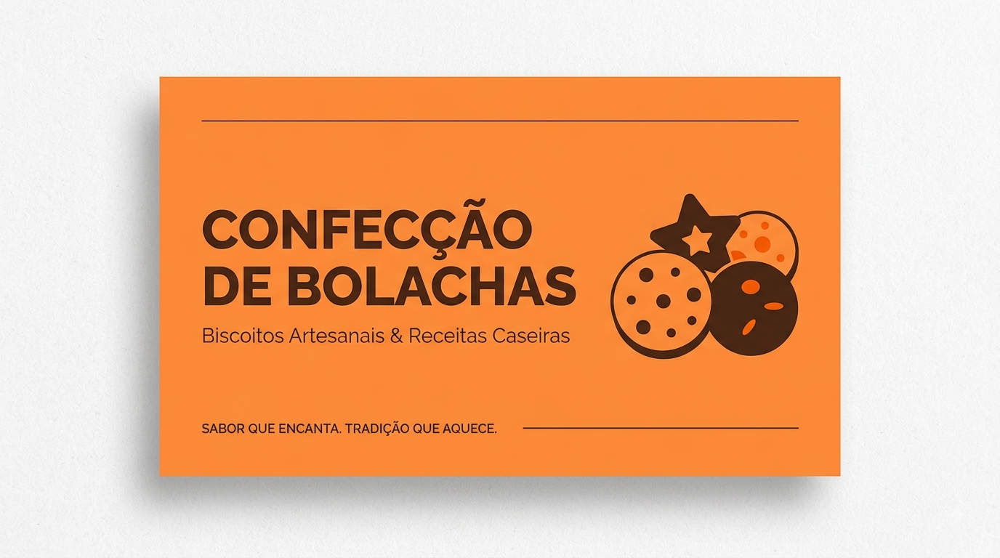

Receitas
Conheça um pouco sobre bolachas
Por: Pietro Contiero
Sejam bem-vindos ao Confecção de bolachas, aqui você encontra receitas e dicas maravilhosas sobre a arte de fazer bolachas. Conheça um pouco sobre bolachas.

Conheça um pouco sobre bolachas
Por: Pietro Contiero